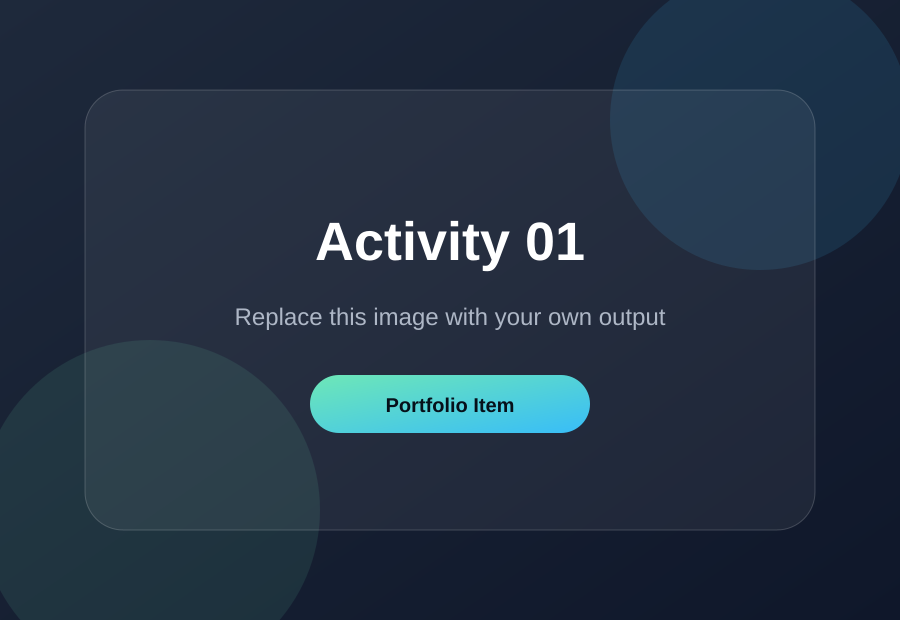
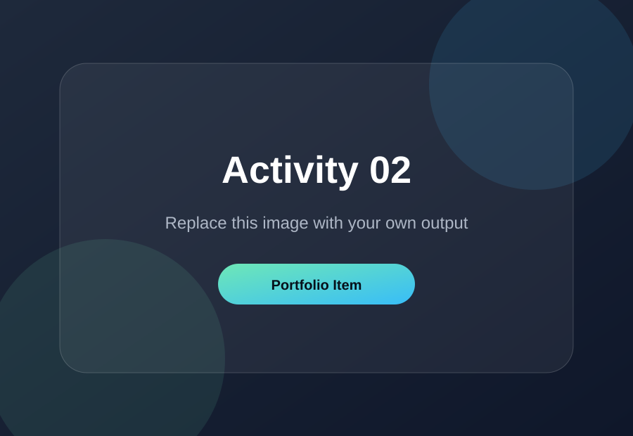
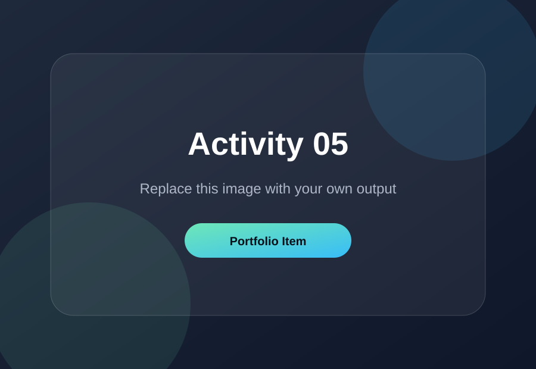
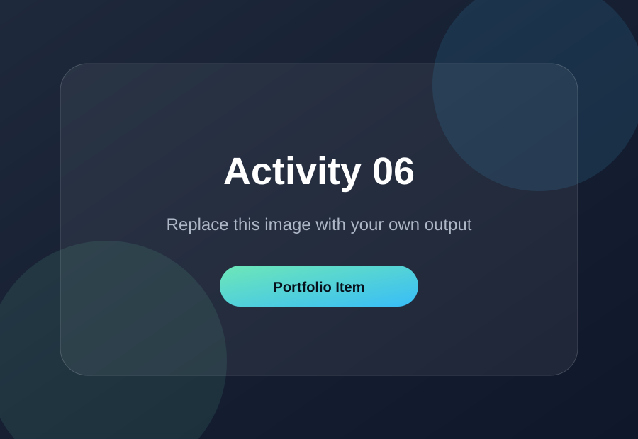

Prelim • Activity 01
Virtual Introduction
Short description of the activity. Explain what tools you used and what the output is about.
This digital portfolio presents my completed academic activities, creative outputs, and project works for our major subject. It also includes a future-based resume concept as part of the portfolio requirement.
Bachelor of Science in Computer Science
This website was created to compile the activities and projects completed throughout the semester. It serves as an online portfolio where the instructor can easily view the outputs, descriptions, and learning reflections in one place.
The layout is designed to be simple, presentable, and content-focused so each activity can be checked without difficulty.
Replace the placeholders with your actual screenshots, images, videos, and project descriptions.

Short description of the activity. Explain what tools you used and what the output is about.

Replace this with your actual activity details and image output.
Describe the concept, design process, and techniques used for the output.
Add a short explanation of the purpose and layout choices.

Write what visual elements, shapes, and principles were applied.

Place your final activity or project here with a concise description.
A future version of my professional background, written as if I have already completed my degree and gained industry experience.
Led the development of responsive web systems, improved user experience, and contributed to scalable software solutions.
Created websites and application interfaces using HTML, CSS, JavaScript, Bootstrap, and modern web development practices.
Completed academic training in programming, web development, database systems, software engineering, and computer science fundamentals.
Student portal system, portfolio website, inventory system, capstone project, and other software development outputs.
Through these activities, I learned how to apply design concepts, organize project outputs, and present my work in a clear and professional way. This portfolio also helped me understand the importance of documentation, consistency, and user-friendly presentation.
Replace this paragraph with your own reflection about the subject, your challenges, and the skills you improved during the semester.
Mark Doniel Regalado
your-email@example.com
Camarines Norte, Philippines